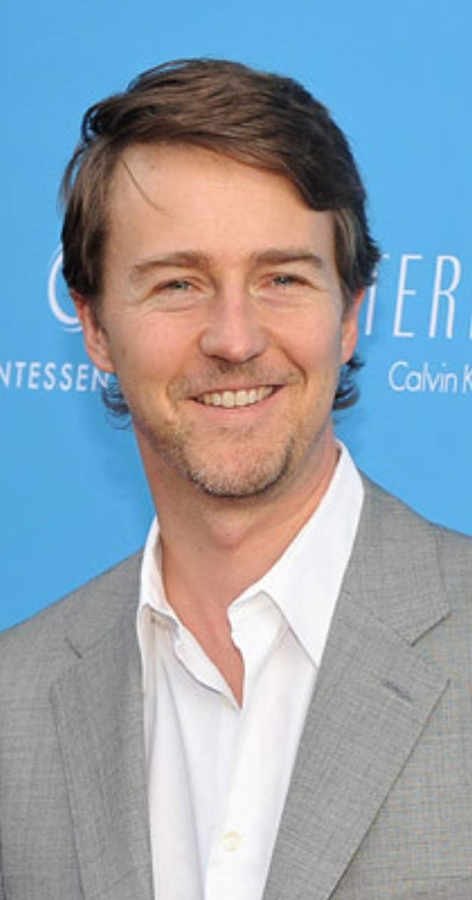

Asistente 1

Edward Norton
Norton nació en Boston, pero gran parte de su infancia la pasó en Columbia (Maryland) cerca de Baltimore. Su madre Lydia Robinson "Robin" (Rouse3) profesora de lengua inglesa en la escuela secundaria local antes de convertirse en directora de subvenciones
educativas en la Fundación Abell, murió de un tumor cerebral en 1997.